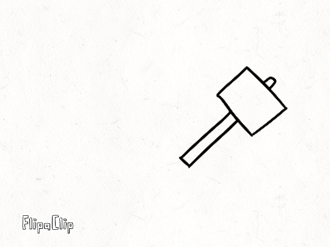
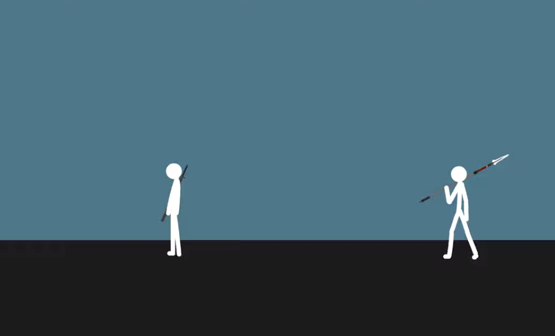

Arcs
In real life, most of our movements consists of arcs. Whenever we throw something or move a stick, there’s a curved line or action that defines the movement, this is known as an arc. Using arcs can make any action feel more convincing in animation when used correctly.

In this animation, we see a hammer pounding, it has a starting point and ane end point following rotation from an axis. This movement through the axis has a curved line to the direction of the head of the hammer, which creates an arc. There are many other objects that involve arcs as well, like when we move our forearms.

Click on the image to see example. This fight sequence has two characters involved in a sword fight; the movement of the swords have a lot of arcs under a few seconds, leaning to some fast paced action. The swords also have a lot of smears, which are animated effects that illustrate the movement of the arcs. This makes the sequence feel like a fight seen taken from a movie.